Results from the 2003 Classroom Evaluation of Hackystat-UH
Philip Johnson
Collaborative Software Development Laboratory
Department of Information and Computer Sciences
University of Hawaii
johnson@hawaii.edu
CSDL-03-13
http://csdl.ics.hawaii.edu/techreports/03-13/03-13.html
Last update: 12/21/2006 02:55:56 PM
1.0 Abstract
This report presents the results from a classroom evaluation of Hackystat by ICS 413
and ICS 613 students at the end of Fall, 2003. The students had used Hackystat-UH for
approximately six weeks at the time of the evaluation. The survey requests their
feedback regarding the installation,
configuration, overhead of use, usability, utility, and future use of the
Hackystat-UH configuration. Results provide evidence that: (1) Significant
problems occur during installation and configuration of the system; (2)
the Hackystat-UH configuration incurs very low overhead after completing
installation and configuration; (3) Analyses were generally found to be somewhat
useful and usable; and (4) feasibility in a professional development context
requires addressing privacy and platform issues.
2.0 Methodology
At the end of the Fall 2003 semester, the students in ICS 413 and ICS 613
were contacted by email and asked to respond to the following questionnaire
soliciting their opinions regarding the Hackystat-UH configuration.
Response was optional, but the students were offered extra credit points for
providing their opinions. The students were asked to reply within five days. Out of 27 students contacted, 24 responded with answers to the
questionnaire.
The complete questionnaire follows:
In order to better understand the strengths and weaknesses of the current
version of Hackystat, and to help guide future improvements, please take a
few minutes to answer the following questions. Your identity will be removed
before performing any analysis on this data. There are no right or wrong
answers: we want to know what your personal experience was.
Most questions ask you to respond with a number from 1 to 5, where 1
indicates the "best" and 5 indicates the "worst". The last question of
each section requests your comments as the response.
I. INSTALLATION/CONFIGURATION
Please provide us with your opinions regarding the installation of
Hackystat sensors and configuration of the Hackystat server.
1. Installing the Eclipse IDE sensor was:
(Very Easy) 1 2 3 4 5 (Very Difficult)
2. Installing the Ant sensors (JUnit, JBlanket, BCML) were:
(Very Easy) 1 2 3 4 5 (Very Difficult)
3. Configuring Hackystat to track our team's work on SiteWatch
(i.e. defining the project, and configuring the workspace roots) was:
(Very Easy) 1 2 3 4 5 (Very Difficult)
4. Please provide any feedback you can on the problems you experienced
during sensor installation and server configuration, as well as any
suggestions you have to make this easier in future.
II. OVERHEAD OF USE
In this section, we are interested in learning about the "overhead" you
experienced with Hackystat--in other words, how much work was required
after installation and configuration to gather data and perform analyses:
5. The amount of overhead required to collect Hackystat data was:
(Very Low) 1 2 3 4 5 (Very High)
6. The amount of overhead required to run Hackystat analyses was:
(Very Low) 1 2 3 4 5 (Very High)
7. Please provide any feedback you can on Hackystat overhead after
installation and configuration, as well as any suggestions you have to
reduce the overhead more in future.
III. USABILITY and UTILITY
This section asks for your opinion on the usability and utility of the
three primary analyses used by Hackystat. We define "usability" to mean the
ease of invoking an analysis and understanding what the results mean. We
define "utility" to mean the usefulness of the analysis; does the analysis
provide information that is actually helpful to you.
8. The Project Member Effort analysis (showing the cumulative time spent by
each project member) was:
(Highly Usable) 1 2 3 4 5 (Not Usable At All)
(Highly Useful) 1 2 3 4 5 (Not Useful At All)
9. The Project Member File analysis (showing the files worked on by each
project member) was:
(Highly Usable) 1 2 3 4 5 (Not Usable At All)
(Highly Useful) 1 2 3 4 5 (Not Useful At All)
10. The Course Project Analysis (showing a comparison of project data
between all of the SiteWatch projects) was:
(Highly Usable) 1 2 3 4 5 (Not Usable At All)
(Highly Useful) 1 2 3 4 5 (Not Useful At All)
11. Please provide any other feedback you can on the usability and utility
of Hackystat analyses, as well as any suggestions you have on how we
can improve usability and utility in future.
IV. FUTURE USE
In this section, we are interested in learning whether you would consider
Hackystat to be feasible (i.e. appropriate, useful, beneficial) for use in a
professional software development context.
12. If I was a professional software developer, using Hackystat at my job
would be:
(Very Feasible) 1 2 3 4 5 (Not Feasible at All)
13. Please provide any other feedback you can on the feasibility of
Hackystat in a professional setting, as well as any suggestions you
have on how we could improve its feasibility in future.
3.0 Results
This section presents the responses from the respondents to each of the
questions. For the "short answer" questions, I corrected misspellings
and minor grammatical errors to improve readability.
3.1 Installation/Configuration
Please provide us with your opinions regarding the installation of Hackystat
sensors and configuration of the Hackystat server.
| Question |
Response |
1. Installing the Eclipse IDE sensor was:
(Very Easy) 1 2 3 4 5
(Very Difficult) |
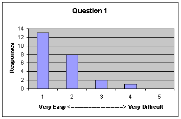 |
2. Installing the Ant sensors (JUnit, JBlanket, BCML) were:
(Very Easy) 1 2 3 4 5
(Very Difficult) |
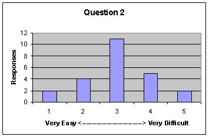 |
3. Configuring Hackystat to track our team's work on
SiteWatch (i.e. defining the project, and configuring the workspace
roots) was:
(Very Easy) 1 2 3 4 5
(Very Difficult) |
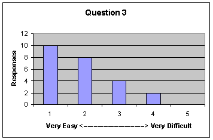 |
4. Please provide any feedback you can on the problems you
experienced during sensor installation and server configuration, as well
as any suggestions you have to make this easier in future.
- Our group had some problems installing the bcml sensor. It would be
helpful if the bcml sensor installation page mentioned the
ClassNotFoundException error so users would know that that error is not
because they installed the sensor incorrectly.
- Yeah a nice installation "wizard" with installation
options and such would be kool.
- An up-to-date document would be very helpful to let users know what has been
implemented
completely and what is still under implementation, so as to make users' lives
much easier.
- There is no introduction about what kind of folder can be set to
workspace root
- Hopefully, the sensor installation should be packaged. I mean it should be
some kind of batch or executable file. It was really ugly to do all the
copying/pasting and editing.
- It's better to provide instruction for different platforms (OS).
One simple but compatible xml file would be more helpful.
Please make sure there is no error in the instruction.
- 1) Maybe it's my fault, but I didn't find it's necessary to set
ENABLE_BCML_SENSOR=true
in the property file, and I had trouble when I installed the bcml sensor.
2) When the computer is offline, it seems that the Ant sensors will
not send out the data.
- I made a mistake when setting up the team project on Hackystat. I
think it was because I didn't thoroughly understand the two different
concepts of workspaces that were on the configuration page. I can't
recall what they are called now. Anyway, after someone clued me in it
made a lot more sense but for some reason I didn't see it at first.
- Those who are not familiar with ant/build file will more likely run into some
installation trouble. Provide an automated installation to take
much of the burden
out of the user.
- I put "HACKYSTAT_HOST=http://hackystat.ics.hawaii.edu/hackystat/"
instead of "http://hackystat.ics.hawaii.edu" in sensor.properties
which caused all the data to be stored offline.
- At least for our project, using Jblanket, the only way to get full coverage
reported through Tomcat was
to define CATALINA_OPTS=-Djblanket.dir= (as per the server-client documentation), this must either
be defined system wide, if you want Tomcat to be run as a different user; or
you must run tomcat yourself and define it before starting Tomcat. This
doesn't seem very practical under most situations, i.e. if you have several
applications you are working on and testing, or if you have other
applications running on your Tomcat server. Obviously, there are work
arounds that the developer can use, but they do make extra work.
Unfortunately, I don't have a fix, but it is something you may want to look
into further.
- Firewall blocked transmitting sensors, perhaps email might be a
better way to
transfer data.
- BCML did not work initially.
I was a bozo and didn't use the correct workspace roots after joining a
project.
- It would be nice if the sensor has a switch option to turn it on/off
from IDE GUI instead of modifying the property file. (Maybe asking too much?
^^).
- The setting root path and delete unwanted path are confusing. The
instruction is located in slides, but not located in help. Generally, help
for usage is not handy at all.
- The biggest problem in installing the eclipse sensor was getting a
period
to appear in first position of a directory name in windows.
- I had a weird NullPointerException error when trying to update my eclipse sensor that was really frustrating. I don't know if we actually figured out the exact cause of the exception.
- The fact that JBlanket didn't work when we specified the JBlanket directory was a little frustrating.
- Setting up the project wasn't that hard. The user interface for configuring the workspace root took a little care, because I have so many different workspaces. It is hard to ensure that I got them all.
- The current version of JBlanket doesn't work correctly. If you run the jblanket twice you get bogus coverage.
I have heard of some unhappiness in the Mac and Linux users.
- After downloading the sensor.properties file, it always
automatically saved as .txt file. It took a long time to find this
problem.
- I think the Hackystat sensor installation is easy, the
server also can be configured easily, but I don't know if it is because I
have some experience already. Anyway, when I took ICS691 in year 2002, I
have hard time to configure it. I think if the Hackystat can offer use a
installation window process which list all of the stuff need to be
installed, such as different IDE sensors, and Ant sensors, then the user
just select the one which they need, and click the "next" button then
everything will be done. Just like the other software installation
process, that will be great.
- As for the JUnit, it's OK. As for the JBlanket, it didn't work for the
local dir output setting. As for the BCML, it's OK for me.
- Would it be better to have a wizard page to let students guide
to set the setting automatically if they follows the instruction.
- Provide more detailed installation instruction will be helpful.
- I think installation could be easier if you could provide installer.
- Your projects do not work well with a multi-user OS. They lack installation
methods which are *nix style modular. No /etc configuration files. Also,
most network daemons run as an alternative user that does not have a home
directory. Install scripts would have been nice. Often times directories
where created in the root under windows and directories in *nix home
directories like: "/home/user/C:\jakarta-jblanket."
Having the C:\ in my home directory did not make me feel that the application
was very professional. Sorry to be critical, I'm just trying to help :-).
- It would be nice if the Hackystat/sensor installation could be
packaged into a single executable (e.g. under installshield) where the
user is prompted to enter the Hackystat host and key. The executable
could then determine the user's home directory and put the .hackystat
files there. Also, a checkbox listing the sensors available could be
displayed and any checked by the user would be automatically installed.
3.2 Overhead of Use
In this section, we are interested in learning about the "overhead"
you experienced with Hackystat--in other words, how much work was required after
installation and configuration to gather data and perform analyses:
| Question |
Response |
5. The amount of overhead required to collect Hackystat data
was:
(Very Low) 1 2 3 4 5
(Very High) |
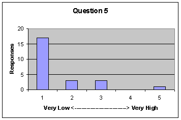 |
6. The amount of overhead required to run Hackystat analyses
was:
(Very Low) 1 2 3 4 5
(Very High) |
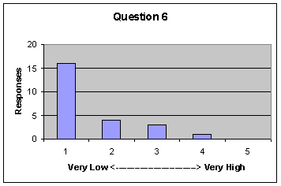 |
7. Please provide any feedback you can on Hackystat overhead
after installation and configuration, as well as any suggestions
you have to reduce the overhead more in future.
- After installation and configuration, there was virtually no overhead
in using hackystat.
- are you kidding, I did absolutely nothing, and hackystat did everything, including
sending me email. That's the way software should be.. now if you could just "fully" automate the installation so that a complete moron can
install hackystat and all the sensors... not necessarily fully
automate, but make an "installation" wizard thingy.
- It's simple to use, not much to worry about.
- I don't like it sending email to me every day, default setting should be
no email sending.
- There is not much documentation on running different analysis. Sometimes
I feel a little confused about which one I should "touch". It would be nicer if
there is a table explaining all different analysis sections.
- almost no need to configure anymore once you have setup the
workspaces.
- for this question, I think hackystat is very good.
- Very low effort, probably a few seconds of time on each build is all.
The main problem was configuration problems with Linux.
- The amount of time required to send bcml, junit and jblanket
everytime an ant task
is invoked is significant to slow down productivity. Maybe it
would be better to
send data only after a work session is done.
- Very good.
- None.
- My machine locked a couple of times, may not have been due to
hackystat but it
didn't lock before I installed it.
- I liked the daily emails that included a link that led straight to my
Hackystat account, not to a login page.
- It is very smooth after installation to check the analysis and
activities. Email option was very good and convenient to visit the
analysis page. All the graphics provided were helpful to understand
what's going on.
- The password is hard to remember, and is not expected to remember. suggest
an ability for user to choose their own password after first login.
- Nothing really
- No good suggestion
- I guess the daily email report contributes a lot for this overhead.
However, as you told us, I prefer the Total time or time unit should be
"hours" instead of "minutes". This definitely helps developer who usually work more than 60 minutes.
- I think the overhead is not very heavy.
- There is not much confusion in using Hackystat.
- The only overhead was from having to visit the website and that was not bad.
- Once installation
is completed successfully, overhead is minimal, if not zero.
3.3. Usability and Utility
This section asks for your opinion on the usability and utility of the three
primary analyses used by Hackystat. We define "usability" to mean the ease of invoking an analysis and understanding what the results mean. We
define "utility" to mean the usefulness of the analysis; does the
analysis provide information that is actually helpful to you.
| Question |
Response |
8. The Project Member Effort analysis (showing the
cumulative time spent by each project member) was:
(Highly Usable) 1 2 3 4 5
(Not Usable At All)
(Highly Useful) 1 2 3 4 5
(Not Useful At All)
|
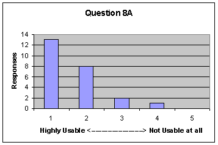
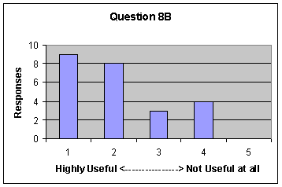 |
9. The Project Member File analysis (showing the files
worked on by each project member) was:
(Highly Usable) 1 2 3 4 5
(Not Usable At All)
(Highly Useful) 1 2 3 4 5
(Not Useful At All) |
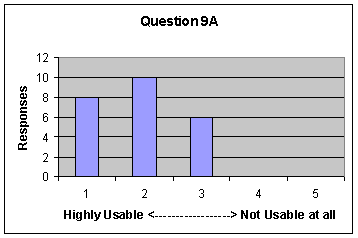
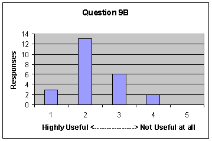 |
10. The Course Project Analysis (showing a comparison of
project data between all of the SiteWatch projects) was:
(Highly Usable) 1 2 3 4 5
(Not Usable At All)
(Highly Useful) 1 2 3 4 5
(Not Useful At All) |
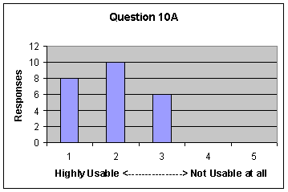
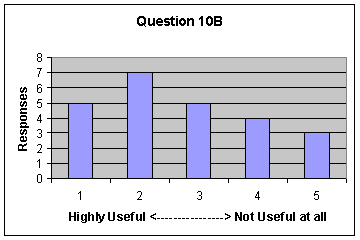
|
11. Please provide any other feedback you can on the
usability and utility of Hackystat analyses, as well as any suggestions
you have on how we can improve usability and utility in future.
- All of the above analyses were easy to use and understand. The Course
Project Analysis was interesting to run to see how your group compared
to the others, but I wasn't sure exactly how that information could be
used to improve your project.
- This analysis (Project Member Effort) can "motivate" group members to work harder
because they'll think "hey look at my other group members working
hard, i should work harder and help them..." not to mention it
stimulates friendly competition. and the book "how to win friends and
influence people" stresses the need of healthy competition in a
successful business. So i guess it has good implications on the
larger "capitalistic/business" scale and helps increase production.
now if a programmer sees that his/her group members are working hard,
and he/she does not care and does not increase performance--- FIRE
THEM!!! no just kidding-- but it does have big brother implications.
but i know your goal is not to play big brother, but rather to help
programmers manage their time, and understand what is working, what is
not working... this intern enables a programmer to "work smarter".
bravo, it does a brilliant job of accomplishing this-- hackystat can
truly inform the development team: "hey things are not working in these
areas, you programmers need to work more consistently and develop more
test cases with better coverage, the project is behind schedule, the
over model seems hard to work with" --
these are the kinds of conclusions i can see one drawing from hackystat analysis. More importantly
hackystat allows developers to
synthesize development information "early" before its too late, so that
they can change their ways and get the project "back on track".
- This analysis (Project Member File) has highly useful implications with reference to design...
for example: the names of the files should be descriptive and so just by
looking at what's been created or worked on in a chronological manner can
show you the progress of the project. Also if a set of files are taking up to much group members' time and the project is at a standstill,
then perhaps the design of those files needs to be re-worked-out.
- The Course Project Analysis is still very useful, but I'd give it a 2 for both
cause you cant read too much into it.
every project is different, every team is different...
there is intangible data that is not represented, like the "capability"
and the "scope" and the "design layout; is it easy to add to it?" are
not taken into consideration-- i think to compare projects one needs to
use formal technical review.
- I used that a lot for keeping track of the time my group members contribute
and
compare with other groups. It's good to motivate oneself to work more.. It's
pretty easy
to use and provides various methods so that you can get the information in a
way
you want.
- Statistic of junit test is useful, time analysis of total work time a day
is not so useful.
- I like (more...) tab(?). Maybe the configuration of each section is not
very intuitive. There were too long horizontal tables which make it hard to
view. However, overall it is easy enough to use.
- First time will feel more comfortable if more terminology are
explained. (LOC/Active time/Coverage etc)
- I think hackystat is good enough for this point.
- This stuff was great. It gives you a rough idea of where you stand.
One problem that I see is that some of the numbers relate to raw work
time but not productivity. I heard some people complain that they had
work members that hadn't really done anything meaningful with the code
but they still racked up minutes. The numbers can be misleading.
- It was useful in the sense that it evaluates and measure your
productivity rating.
It could also be useful if you are a project leader and needs
to track down member's
contribution and productivity on the projects. Personally, I
was a little scared to use
it knowing that somebody or anybody can actually monitor what
I'm doing.
- Interface more clear and easy to understand, it's better if I can
understand how to use it in 5 minutes. and figure out how to use each
page by just looking at it.
- None
- At least in our case, the information wasn't "useful" and actually
misleading. Note
that personal active time doesn't translate directly to project time
which is inconsistent
with how you'd expect the system to work if you were only working on
one project.
- It was all useful to see how the projects are going. But when people
spend a lot of time refactoring the program, in Hackystat, this will
just increase the total project time. In fact, the quality of the
program may be better after refactoring.
- Since we did more than two weeks pair programming on one member's machine
and another member doesn't have any progress reflected in Hackystat.
Suggest a pair programming choice to add both student's time .
- the project member analysis is useful when all members have the
sensors
correctly setup. The file analysis was useful in checking what
files your partners were
working on so you didn't overwrite something they did. the course
project analysis
is nice, but it can be intimidating, comparing your group to
others, when everyone doesn't takes a different amount of time to do the something.
- This analysis (Project Member Effort) was great for project management. It allowed me to see what each developer was working on.
Kind of big brotherish but I would claim that in the project setting this is exactly what you would want.
- This analysis (Project Member File) was also great for project management. One very good indication that it provided was that developers were reading code that they weren't currently developing on, ie I knew they weren't coding on specific files but, they had active time associated with that file. This indicated that they were reading the code.
- Because, we considered our team process to be good for our team, we rarely looked at this analysis. I guess this analysis
However, if we were on the other side, had a "bad" process, then I think we would want to use this analysis.
- The project level analyses are great.. However, the course level analyses didn't provide much useful information.
I would claim that project and course level analyses were part of [our] dream use of
Hackystat [in a prior class]. The departure from "individual analyses" was exactly what we were aiming for. I think that
[we] still would want larger scale analyses than course level. For example, finding out what programmatic differences are there between different demographics. But, that kind of analysis does sound hard.
- I think the Hackystat analyses will be very useful for the
employer to see how much time the employee spend on his work, and how
efficient the employee's work. Beside the graph, if the Hackystat can
offer some comment and suggestion to the use base on the data, that will
be great.
- In terms of how much individually was spent for our project, it is very useful. However, I am worried about the "Big Brother" problem. As I
was asked from the other students, labeling all the members name would be
too much information in some case. I guess, instead of labeling all of
the members, Only the person concerned is labeled, the other members are
not labeled. so that the person feel less being watched by other
members or manager. This still help to motivate the person who are less
working than other members to know his/her current position.
- The interface is good. It would be better to make it less confusing.
- I would appreciate if Hackystat can give me a weekly report on email.
It is going to be very useful if I could set some default values for each analysis.
I do not want to select date every time.
- Maybe browse work by packages instead of just files.
- These features are a particular strong suit of Hackystat. Other than
concurrency issues, I believe these features are fully functional.
3.4 Future Use
In this section, we are interested in learning whether you would consider
Hackystat to be feasible (i.e. appropriate, useful, beneficial) for use in a professional software development context.
| Question |
Response |
12. If I was a professional software developer, using
Hackystat at my job would be:
(Very Feasible) 1 2 3 4
5 (Not Feasible at All)
|
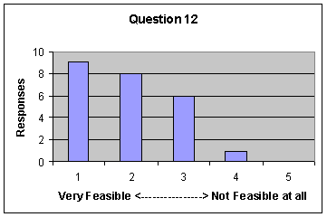 |
13. Please provide any other feedback you can on the
feasibility of Hackystat in a professional setting, as well as any
suggestions you have on how we could improve its feasibility in future.
- I think Hackystat is very feasible in a professional setting. The only
problem i can think of is that some people may not want to be monitored.
- Number (1) as long as management didn't use the software in an
uneducated malicious manner... like big-brother-style-- that goes
against the vision i think.
- It has some problems dealing with different platforms like Linux.
Considering many programming
professional "hackers" are Linux fans, hackystat should be improved to run
smoothly on Linux.
- Make installation easier, add more statistic data about the project,
such as total number of classes, total work time on one class, total
methods in one class, change times and who make what kind of change
- I think it's very Feasible(1) for the manager, not the programmer
- Cool tool. Seems to have a couple of problems with the Unix
environment. It drops c:\ directories down in various places, bcml
needed little tweaks to work correctly, and jblanket gave different
coverage numbers on windows and Linux.
- It would probably useful to have hackystat sensor installed on
workplace computers
but not your personal computer even if you're doing project related
work.
- Interface needs to be improved, sensor installation needs to be simplified
for the users.
- I would say it is feasible on an individual basis, but on an organizational
level much more difficult;
however, assuming you could get everyone in your organization to cooperate,
and almost always use IDE's with sensors, it could be very useful. Not to
be too critical, but more testing on unix based systems would be helpful
(especially with the OS X becoming popular with developers).
- I would be interested in bringing hackystat to my workplace. From a
professional standpoint,
the individual statistics are useful for determining coding time. Not
sure if the group statistics are
as useful but maybe if they follow the same rules as the personal
statistics
- I'm sure that I'll find the data provided by Hackystat more useful as I gain
more experience developing more intermediate to large systems.
- If Hackystat has some convenient features such as "sensor
preferences" from IDE, this will be a good tool to adopt to have a nice
analysis of project.
- As mentioned on class in top 10, quality is more important than
quantity. Somebody likes to write a small experimental program in other
place to test
out some code before inserting experimental code into big project to save
time of build and install. So the
statistics in Hackystat can not fully reflect the efforts and the code
quality. It is meaningful only considering other factors like design,
code quality, extensibility and usability.
- Two words that hinders professional settings, "Big Brother".
- If I was a boss who hired some software developer,
Hackystat will be feasible at my job
- Well, this is a hard question, though. For the active trend in group,
it would be useful for a manager especially. If it is used for the "Big
Brother" software, I as the developer would not recommend my boss to
use this :) However, I really feel positive to use the active time to
check how much I sent for programming, and test is invoked, coverage is
invoked at a day or a week.
- It seems some people would not like it because of privacy.
- I will use for myself, but I does not want my Boss to know about Hackystat.
After becoming a mangement position, I will use this for my project.
- Please make a Hackystat sensor for Macromedia Dreamweaver,
I do some web page scripting on this application.
- The installation needs to be more professional and it has privacy issues that
bother me. I have to use it more before I made a decision about it. If I
did more java programming I would.
- The problem is many companies block outside communication over the
internet. For example, when I was working at JPMorgan, their firewall
would not let me send data to the hackystat server at UH. I think we
should focus on automating Hackystat server installation, so that
companies would feel secure sending project data, as it would be
screened from outside eyes.
4.0 Conclusions
4.1 Experimental Limitations
Before drawing any conclusions from this data, it is important to recognize
the limitations of this study.
First, this data is drawn from a limited sample size of approximately two
dozen students in software engineering classes at the University of
Hawaii. The subjects therefore have a relatively narrow and homogeneous background in software development.
Second, the context in which they used the system was a course project.
Course projects tend to be smaller, narrower in scope, and with less pressure on
the developers than an industrial context. It is one thing to get a poor
grade for doing a poor job, it is another thing to lose your job for doing a
poor job. In addition, students are not working full-time on the system;
the development project is just one assignment among several.
Third, the administration of the questionnaire was performed by the designer
of the system under study, who was also the instructor for the class. In
addition, responses were not provided anonymously, but rather emailed back to
the instructor/designer. This raises the question of whether the responses
are biased, either consciously or unconsciously, in order to "please"
the instructor/designer who would presumably be gratified by positive responses
to the questionnaire.
These are all major limitations on the external validity of the
responses. They do not make the results meaningless, but rather help
provide a perspective on how to gain additional evidence in future that would
confirm/disconfirm these initial findings. For example, it would be
helpful to deploy Hackystat-UH in a classroom setting in another
University, and then gather data anonymously from the participants using someone
other than the instructor in order to avoid the potential for bias present in
this study. Other insights into future research directions will be covered in
the next section.
4.2 Conclusions regarding Installation/Configuration
The numerical data indicates that the Eclipse sensor was easiest to install,
followed by the server-side configuration and lastly by the Ant sensors.
Significant problems were articulated by many participants regarding the
difficulties involved with installing the Ant sensors.
Our principal conclusion is that significant work is still required on the
installation of certain sensors in the system to make them more usable.
Improvements include the ease with which sensors can be downloaded and installed
and the quality of documentation available. It appears that without these
improvements, the system cannot yet be installed without direct help from the
development team.
4.3 Conclusions regarding overhead of use
The data from this section is pretty unambiguous: if the user can survive the
installation/configuration process, then the overhead of daily use of the system
is quite low.
Our principal conclusion is that in this respect, the current design of
Hackystat is quite successful.
4.4. Conclusions regarding usability and utility
Recall that the survey defined "usability" to mean the ease of invoking an analysis and understanding what the results mean.
The survey defined "utility" to mean the usefulness of the analysis; does the
analysis provide information that is actually helpful to you. Although the
Hackystat-UH configuration actually provides 16 analyses, there were only three
analyses that were actively discussed in class and which the students were
expected to use. These three analyses were the subject of the questions in
this section.
All of the analyses rated well with respect to usability. There are
minor things we can improve (such as making dates persistent, making the tabular
representation fit better into a page, etc.) For the most part, however,
reactions indicate that it is relatively easy to invoke the analyses and
understand the results.
There was a broader diversity of opinion regarding the utility, or
usefulness, of these analyses. The first two analyses, Project Member
Effort and Project Member File, are "intra-group" analyses--they
reveal information to a group member about the process and products of the group
itself. Most respondents found these analyses to be of at least some use.
What was quite interesting was the response to the third analysis, which
provides "inter-group" or comparative analyses between groups.
Attitudes toward the usefulness of this analysis were the most divided of the
entire survey: almost equal numbers found it to be useful and
useless! Comments indicated that some students did not feel that
projects were comparable, or at least that the kinds of measures of comparison
(LOC, methods, classes, effort) were not useful.
What also came up in several of the comments in this section was the specter
of "Big Brother" and privacy. The Hackystat-UH configuration
provides a greatly increased level of transparency into the work habits of
individual developers. This was uncomfortable for some students, although
several apparently thought it was OK as long as they were managers and receiving
the data about their programmers.
Our conclusion regarding this section is that the usability of Hackystat-UH
is reasonable. The usefulness of the three principal analyses is also
reasonable. However, more work needs to be done on how to either (a) raise the
usefulness to such a high level that the loss of privacy seems worth the
benefits obtained, or (b) alter the set of analyses in such a way that more
privacy is accorded developers regarding their personal work habits, while still
providing information of use about the overall course of development.
4.5 Feasibility in a professional software development context
The major conclusion from this section is: "It's the privacy,
stupid." The data provides considerable evidence that many
developers would be put off by the introduction of the Hackystat-UH
configuration into a professional setting due to the way it reveals hitherto
"private" aspects of a developer's working style. However,
the Hackystat-UH configuration, as its name suggests, is not designed for a
professional setting, it is designed explicitly for a classroom setting.
(The Hackystat-JPL configuration, in contrast, which was designed for a
professional setting, performs analyses that involve almost no direct developer
data).
Our conclusion from this section is that some aspects of the design of
Hackystat, such as the low overhead of daily data collection and analysis, seem
to make it well suited to professional use. However, other aspects of the
current configuration, such as the analyses revealing individual developer work
habits, would raise adoption issues in a professional setting. Future research
can address how to better preserve privacy while still yielding the benefits of
unobtrusive data collection and analysis.
4.6 Want to participate further?
If you have any other thoughts or inspirations upon reading this technical
report, please don't hesitate to send me email at johnson@hawaii.edu.